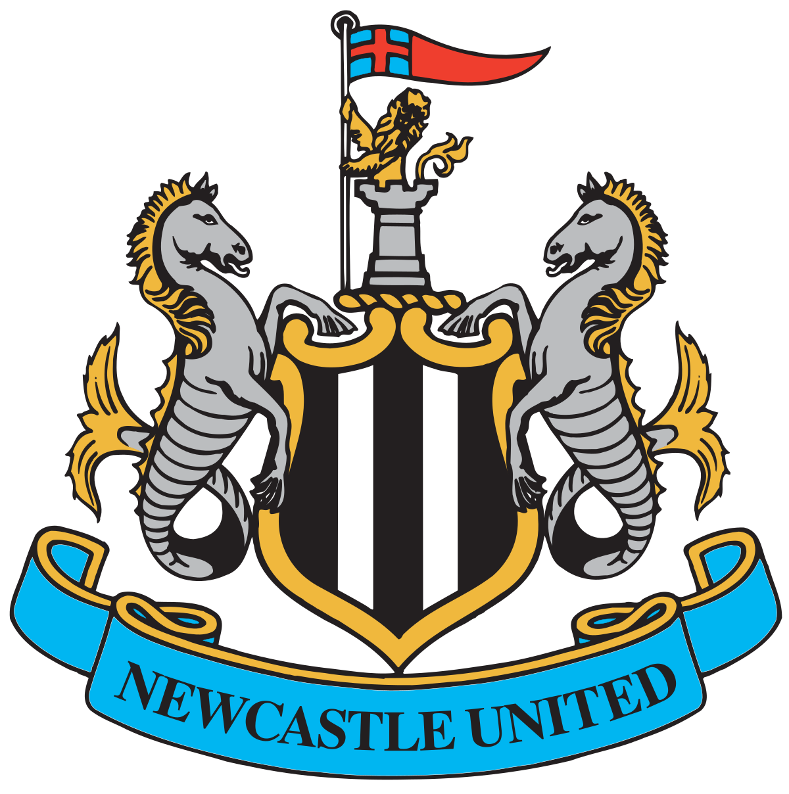
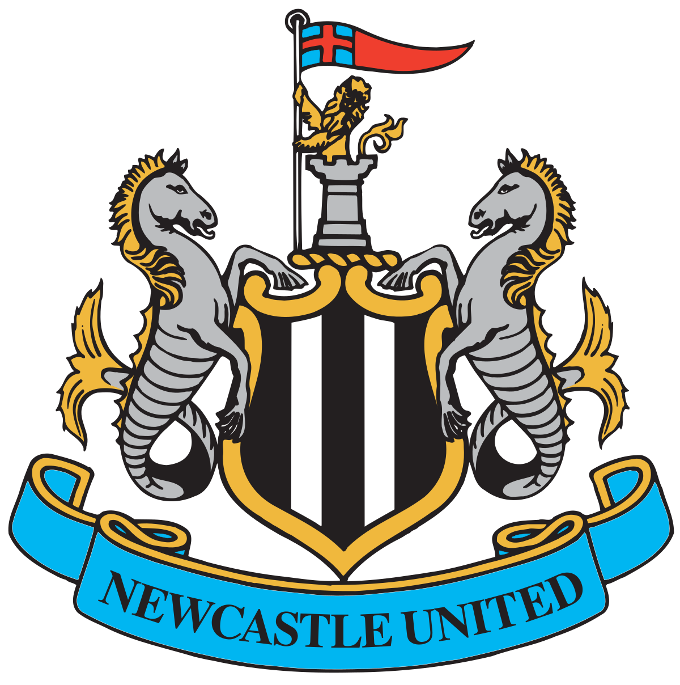

RESULT
Championship | 13 Jul | Stamford Bridge | 1900 GMT 8
3 2
Dani Rojas 13' 29' 65'
Ovie Ejaria 34'
Shane Long 90'
FA Cup | 7 Jul | Old Trafford | 0000 GMT 8

4 1
Rashford 2' 65'
Luke Shaw 34'
Jadon Sancho 89'
Jamie Tart 55'
Europa League| 30 June | Camp Nou | 2100 GMT 8

3 1
Jamie Tart 2' 65'
Calumn Wilson (OG) 34'
Dani Rojas (OG) 89'
Europa League| 23 June | Camp Nou | 2200 GMT 8
2 2
Mikel Oyarzabal 34' 35' (OG)90'
Richard Montlaur 67'
Dani Rojas (OG) 89'
Championship | 11 June | Saint Mary's Stadium| 0030 GMT 8

4 5
James Ward Prowse 30' 65'
Jamie Tart 34'
Che Adams 87'
Dani Rojas (P) 90+1'
Championship | 7 June | Emirates Stadium | 1930 GMT 8

1 2
Gabriel Jesus 12'
Sam Obisanya 90' 90+1'
Championship | 13 Jul | Stamford Bridge | 1900 GMT 8
3 2
Dani Rojas 13' 29' 65'
Ovie Ejaria 34'
Shane Long 90'
FA Cup | 7 Jul | Old Trafford | 0000 GMT 8
4 1
Rashford 2' 65'
Luke Shaw 34'
Jadon Sancho 89'
Jamie Tart 55'
Europa League| 30 June | Camp Nou | 2100 GMT 8
3 1
Jamie Tart 2' 65'
Calumn Wilson (OG) 34'
Dani Rojas (OG) 89'
Europa League| 23 June | Camp Nou | 2200 GMT 8
2 2
Mikel Oyarzabal 34' 35' (OG)90'
Richard Montlaur 67'
Dani Rojas (OG) 89'
Championship | 11 June | Saint Mary's Stadium| 0030 GMT 8
4 5
James Ward Prowse 30' 65'
Jamie Tart 34'
Che Adams 87'
Dani Rojas (P) 90+1'
Championship | 7 June | Emirates Stadium | 1930 GMT 8
1 2
Gabriel Jesus 12'
Sam Obisanya 90' 90+1'
UPCOMING FIXTURES
20:00 3 JAN
Friendly
AFC Richmond VS Al-Hilal
21:00 9 JAN
Friendly
AFC Richmond VS Al-Nassr
23:00 5 FEB
Europa League
Chelsea VS AFC Richmond
00:00 9 FEB
Europa League
Cardiff VS AFC Richmond